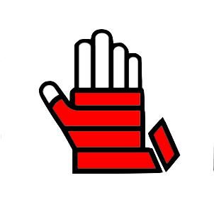
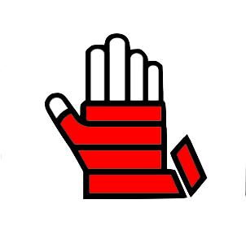

To create any kind of icon that meets universal icon standards.
Sketchbook.
Adobe Illustrator.
The image to the left portrays my initial sketches while I was still deciding which theme to choose. I find thumbnails to be an effective way to get out as many ideas as possible for a more successful outcome. Once I chose to create muay thai icons, you can see in the secpnd photo that I used several online images as inspiration.

You can click here to view my rough drafts below which I sketched out before moving on to designing with Adobe Illustrator. I believe that sketching out ideas before moving on to digital design is important because it allows for more freedom, resulting in more ideas. When you obtain your final idea through sketch, you can easily scan it, paste it into a design software and use it as an effective template to digitally design over top.
Below are my final three logos. I kept the background white, but it is easily changeable for the future.
There is a colour example underneath.
 
